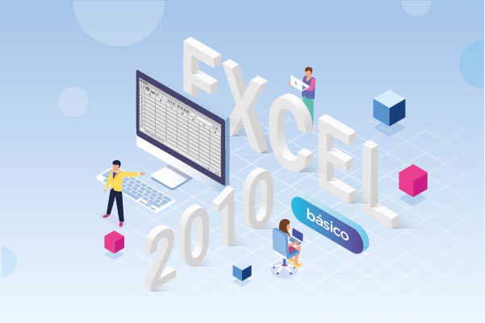

Agente
administrativo
Plataforma
de
Cursos
Áreas temáticas
Cursos con inscripción abierta
Introducción a la Documentación Administrativa
Este curso brinda una visión general sobre los principios, procedimientos y normas que rigen la documentación administrativa en la Administración Pública Nacional (APN).
Saber más...
A través de contenidos teóricos y prácticos, se busca que los participantes comprendan la importancia de la gestión documental como herramienta clave para la transparencia, la eficiencia y la trazabilidad en la administración pública. Al finalizar, los cursantes podrán identificar los tipos de documentos, su ciclo de vida, y aplicar criterios básicos para su correcta elaboración, registro, archivo y conservación.
Introducción al procedimiento de contrataciones de la Administración Pública Nacional
Este curso ofrece una visión general del marco normativo y las etapas fundamentales del procedimiento de contrataciones en la Administración Pública Nacional.
Saber más...
A través de contenidos teóricos y ejemplos prácticos, los participantes comprenderán cómo se planifican, gestionan y adjudican las contrataciones, garantizando transparencia, eficiencia y cumplimiento de la normativa vigente. Está dirigido a agentes públicos, profesionales y toda persona interesada en conocer el funcionamiento del sistema de compras del Estado.
Metodologías ágiles para la gestión de proyectos
Este curso ofrece una introducción práctica a las principales metodologías ágiles utilizadas en la gestión moderna de proyectos, como Scrum, Kanban y Lean.
Saber más...
A lo largo de las clases, los participantes aprenderán a planificar, ejecutar y adaptar proyectos de manera flexible, priorizando la colaboración, la mejora continua y la entrega de valor al cliente. Ideal para profesionales que buscan optimizar procesos, fomentar el trabajo en equipo y responder con eficacia a los cambios del entorno.

Excel Básico
Este curso está diseñado para quienes desean iniciarse en el uso de Microsoft Excel.
Saber más...
Aprenderás a manejar las herramientas fundamentales del programa: crear y editar hojas de cálculo, usar fórmulas y funciones básicas, organizar datos y aplicar formatos para mejorar la presentación de la información. Al finalizar, podrás realizar tareas cotidianas de forma más rápida y eficiente, optimizando tu trabajo con datos numéricos y tablas. Ideal para estudiantes, profesionales y cualquier persona que quiera mejorar sus habilidades digitales.
Excel 2010 - Funciones avanzadas
Este curso está diseñado para usuarios que ya poseen conocimientos básicos de Excel y desean profundizar en el uso de sus herramientas más potentes.
Saber más...
A lo largo de las clases, se aprenderá a aplicar funciones avanzadas como BUSCARV, INDICE, COINCIDIR, SI anidados, funciones de texto, fecha y estadísticas, entre otras. Además, se abordarán técnicas para automatizar tareas, analizar datos y optimizar hojas de cálculo. Ideal para quienes buscan mejorar su eficiencia y aprovechar al máximo las capacidades de Excel 2010 en el entorno laboral.
Excel 2010 - Tablas dinámicas
Aprendé a analizar grandes volúmenes de datos de forma rápida y eficiente con las tablas dinámicas de Excel 2010.
Saber más...
En este curso práctico descubrirás cómo crear, personalizar y actualizar tablas dinámicas para resumir información, generar reportes profesionales y tomar decisiones basadas en datos. Ideal para quienes buscan optimizar su trabajo en hojas de cálculo y mejorar sus habilidades en el manejo de información.